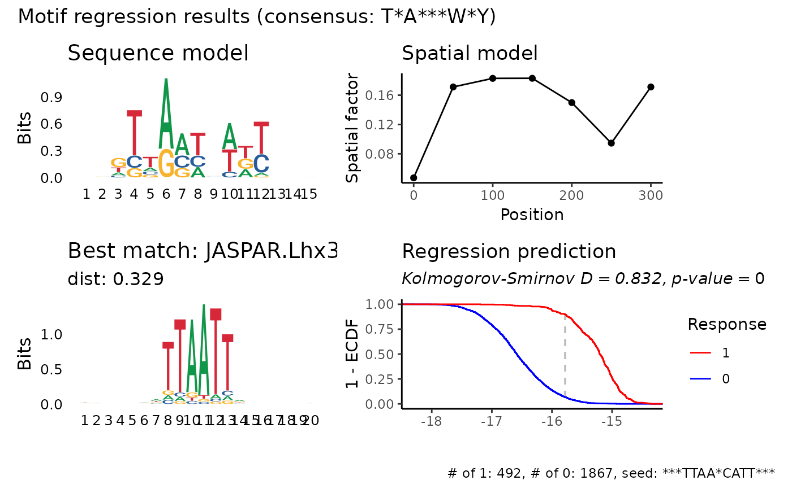

Run PWM regression on a sample of the data
regress_pwm.sample.RdThe optimization would be performed with a sampled dataset of size sample_frac (or explicit sampled indices sample_idxs) where different candidates of kmers would be regressed in order to find the best seed according to final_metric.
Usage
regress_pwm.sample(
sequences,
response,
motif_length = 15,
score_metric = "r2",
bidirect = TRUE,
spat_min = 0,
spat_max = NULL,
spat_bin = 50,
improve_epsilon = 0.0001,
min_nuc_prob = 0.001,
unif_prior = 0.05,
is_train = NULL,
include_response = TRUE,
seed = 60427,
verbose = FALSE,
kmer_length = 6:8,
max_cands = 10,
min_gap = 0,
max_gap = 1,
min_kmer_cor = 0.1,
consensus_single_thresh = 0.6,
consensus_double_thresh = 0.85,
sample_frac = NULL,
sample_idxs = NULL,
sample_ratio = 1,
final_metric = "r2",
parallel = getOption("prego.parallel", FALSE),
match_with_db = FALSE,
motif_dataset = all_motif_datasets(),
...
)Arguments
- sequences
A vector of DNA sequences ('A', 'T', 'C' or 'G'. Will go through
toupper)- response
A matrix of response variables - number of rows should equal the number of sequences
- motif_length
Length of the seed motif. If the motif is shorter than this, it will be extended by wildcards (stars). Note that If the motif is longer than this, it will not be truncated.
- score_metric
metric to use for optimizing the PWM. One of "r2" or "ks". When using "ks" the response variable should be a single vector of 0 and 1.
- bidirect
is the motif bi-directional. If TRUE, the reverse-complement of the motif will be used as well.
- spat_min
start of the spatial model from the beginning of the sequence (in bp)
- spat_max
end of the spatial model from the beginning of the sequence (in bp). If NULL - the spatial model would end at the end of the sequence.
- spat_bin
size of the spatial bin (in bp).
- improve_epsilon
minimum improve in the objective function to continue the optimization
- min_nuc_prob
minimum nucleotide probability in every iteration
- unif_prior
uniform prior for nucleotide probabilities
- is_train
a boolean vector that determine which subset of sequences to use when screening
- include_response
include the response in the resulting list (default: TRUE)
- seed
random seed
- verbose
verbosity of the optimization.
- kmer_length
a vector of kmer lengths to screen in order to find the best seed motif.
- max_cands
maximum number of kmer candidates to try.
- consensus_single_thresh, consensus_double_thresh
thresholds for the consensus sequence calculation (single and double nucleotides)
- sample_frac
fraction of the dataset to sample. When
responseis categorical (0 and 1), the sampling would be stratified by the category, i.e.sample_fraccan be a vector of length 2 with the fraction of 0 and 1 responses to sample respectively. If NULL - the default would be 0.1 for continuous variables, and for binary variables - the number of 0 responses would be equal tosample_ratiotimes the number of 1 responses.- sample_idxs
indices of the sequences to use. If NULL, the indices would be sampled using
sample_frac.- sample_ratio
ratio between the '1' category and the '0' category in the sampled dataset. Relevant only when
sample_fracis NULL.- final_metric
metric to use in order to choose the best motif. One of 'ks' or 'r2'. Note that unlike
score_metricwhich is used in the regression itself, this metric is used only for choosing the best motif out of all the runs on the sampled dataset.- parallel
whether to run optimization in parallel. use
set_parallelto set the number of cores to use.- match_with_db
match the resulting PWMs with motif databases using
pssm_match. Note that the closest match is returned, even if it is not similar enough in absolute terms.- motif_dataset
a data frame with PSSMs ('A', 'C', 'G' and 'T' columns), with an additional column 'motif' containing the motif name, for example
HOMER_motifs,JASPAR_motifsor all_motif_datasets(). By default all_motif_datasets() would be used.- ...
Arguments passed on to
screen_kmersmin_corOnly patterns for which the maximum correlation to one of the response variable is larger than min_cor will be reported
min_nOnly patterns for which the average number of occurrences in the sequences is larger than min_n will be reported
min_gap,max_gapthe length of a gap to be considered in the pattern. Only one gap, of length min_gap:max_gap, is being used, and is located anywhere in the motif. Note that this greatly expand the search space (and increase multiple tesing severly).
from_rangeSequences will be considered only from position from_range (default 0)
to_rangeSequences will be considered only up to position to_range (default NULL - using the length of the sequences)
return_matReturn a matrix of patterns and their correlation to the response variables instead of a data frame. (default: FALSE)
Value
a list with the following elements:
pssm: data frame with the pssm matrix with the inferred motif, where rows are positions and columns are nucleotides.
spat: a data frame with the inferred spatial model, with the spatial factor for each bin.
pred: a vector with the predicted pwm for each sequence.
consensus: Consensus sequence based on the PSSM.
response: The response matrix. If
include_responseis FALSE, the response matrix is not included in the list.r2: \(r^2\) of the prediction with respect to the each response variable.
ks: If response is binary, Kolmogorov-Smirnov test results of the predictions where the response was 1 vs the predictions where the response was 0.
seed_motif: The seed motif that started the regression.
kmers: The k-mers that were screened in order to find the best seed motif (if motif was NULL).
sample_idxs: The indices of the sequences that were used for the regression (only for
regress_pwm.sample).
Examples
res <- regress_pwm.sample(cluster_sequences_example, cluster_mat_example[, 1], final_metric = "ks")
#> ℹ Performing sampled optimization
#> ℹ Sampling 0.26 and 1 of the dataset
#> ℹ Stratified sampling
#> ℹ sampled 492 zeros and 492 ones
#>
#> ── Generate candidate kmers
#>
#> ── Regress each candidate kmer on sampled data
#> ℹ Running regression on 12 candidate kmers
#> • Bidirectional: TRUE
#> • Spat min: 0
#> • Spat max:
#> • Spat bin: 50
#> • Improve epsilon: 0.0001
#> • Min nuc prob: 0.001
#> • Uniform prior: 0.05
#> • Score metric: "r2"
#> • Seed: 60427
#> ℹ Best motif: "***TAAT*ATT****", score (ks): 0.839430894308943
#> ✔ Finished running regression. Consensus: "T*A***W*Y"
#> ✔ KS test D: 0.8317, p-value: 0
res$pssm
#> pos A C G T
#> 1 0 0.250626564 0.197994992 0.3007518649 0.250626564
#> 2 1 0.172827423 0.126956835 0.4582388699 0.241976887
#> 3 2 0.001020463 0.224947587 0.1401386410 0.633893311
#> 4 3 0.183996066 0.145866245 0.1611137390 0.509023905
#> 5 4 0.750249088 0.000829170 0.2480926216 0.000829170
#> 6 5 0.493347496 0.277119190 0.2284980565 0.001035169
#> 7 6 0.205613986 0.260621846 0.0010101653 0.532754004
#> 8 7 0.243313923 0.269434452 0.3032339811 0.184017703
#> 9 8 0.454548210 0.120878413 0.0008699328 0.423703402
#> 10 9 0.272164911 0.001022725 0.3231071830 0.403705150
#> 11 10 0.032962959 0.355953276 0.0507135391 0.560370207
#> 12 11 0.246685192 0.227644801 0.2974082530 0.228261679
#> 13 12 0.266773373 0.268996507 0.2223111391 0.241918981
#> 14 13 0.209610566 0.308415264 0.2409870923 0.240987092
#> 15 14 0.245290428 0.254709572 0.2649136484 0.235086337
res$spat
#> bin spat_factor
#> 1 0 0.05538948
#> 2 50 0.16784865
#> 3 100 0.19019334
#> 4 150 0.18985935
#> 5 200 0.14691675
#> 6 250 0.08195649
#> 7 300 0.16784865
head(res$pred)
#> [1] -16.36732 -16.49921 -16.82357 -15.62233 -15.53948 -15.02455
plot_regression_qc(res)
#> Warning: `guides(<scale> = FALSE)` is deprecated. Please use `guides(<scale> = "none")` instead.
#> Warning: `guides(<scale> = FALSE)` is deprecated. Please use `guides(<scale> = "none")` instead.
